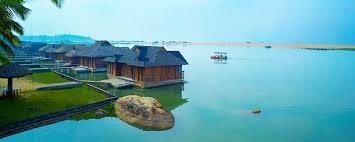
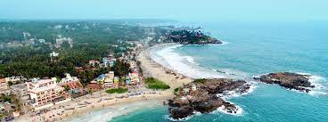
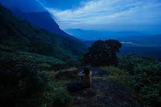
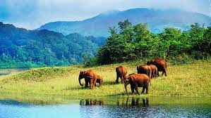

Sree Padmanabhaswamy Temple
The Sree Padmanabhaswamy Temple is a Hindu temple located in Thiruvananthapuram, the state capital of Kerala, India. It is considered as the richest place of worship in the world. The name of the city of 'Thiruvananthapuram' in Malayalam translates to "The City of Lord Ananta", (The City Of Lord Vishnu) [1] referring to the deity of the Padmanabhaswamy temple. The temple is built in an intricate fusion of the Chera style and the MalayalaTamilan style of architecture, featuring high walls, and a 16th-century gopura.

Poovar Island
Unspoiled and unexplored, enveloped by the most serene backwaters, and opening out to the Arabian Sea and a dream golden sand beach, Poovar Island Resort is truly a window into paradise. Built on 25 acres of lush green coconut gardens alongside the beach, the resort currently comprises of elegant land based superior rooms, built around the swimming pool on a natural lily pond and is unique in India for the floating cottages and villas which are afloat on the backwaters and face the sea. Located 30 kms from Trivandrum International Airport, the resort is accessible only by a 10-minute boat ride on the river.

Kovalam Beach
Kovalam is an internationally renowned beach with three adjacent crescent beaches. It has been a favourite haunt of tourists since the 1930s. A massive rocky promontory on the beach has created a beautiful bay of calm waters ideal for sea bathing.

Agastya Mala
Agasthyamala Biosphere Reserve which lies on the border between the Indian states of Kerala (in Pathanamthitta, Kollam and Thiruvananthapuram districts) and Tamil Nadu (in Kanyakumari district, Tirunelveli district). The perennial Thamirabarani River originates from the eastern side of the range and flows into the Tirunelveli district of Tamil Nadu

Neyyar Wildlife Sanctuary
The Neyyar reservoir is easily navigable and extends 9.06 sq. km. The vegetation varies from tropical wet evergreen to grasslands. The Agasthyakoodam hill, 1890 metres high, lies in the premises of the sanctuary. Elephants, gaur, sloth bear, Nilgiri tahr, jungle cat, wild boar, Nilgiri langur etc. are seen. A crocodile rearing centre, deer farm and lion safari park are the main attractions.